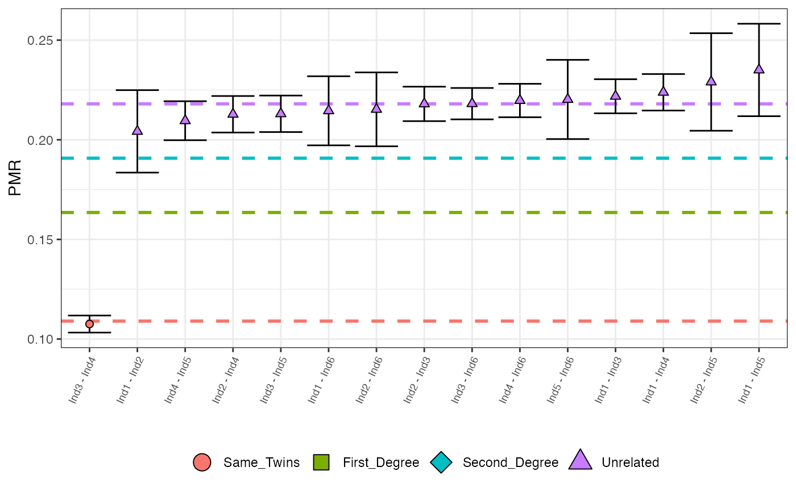

Plots all (sorted by increasing value) observed PMR values with maximum posterior probability classifications represented by colour and shape. Options include a cut off for the minimum number of overlapping SNPs, the max number of pairs to plot and x-axis font size.
Arguments
- in_tibble
a tibble that is the output of the callRelatedness() function.
- nsnps_cutoff
the minimum number of overlapping SNPs for which pairs are removed from the plot. If NULL, default is 500.
- N
the number of (sorted by increasing PMR) pairs to plot. Avoids plotting all pairs (many of which are unrelated).
- fntsize
the fontsize for the x-axis names.
- verbose
if TRUE, then information about the plotting process is sent to the console
Examples
relatedness_example
#> # A tibble: 15 × 12
#> row pair relationship pmr sd mismatch nsnps ave_rel Same_Twins
#> <int> <chr> <fct> <dbl> <dbl> <dbl> <dbl> <dbl> <dbl>
#> 1 1 Ind1 - In… Unrelated 0.204 0.0103 310 1518 0.218 6.71e- 26
#> 2 2 Ind1 - In… Unrelated 0.222 0.00428 2093 9435 0.218 1.22e-214
#> 3 3 Ind1 - In… Unrelated 0.224 0.00458 1854 8283 0.218 2.00e-194
#> 4 4 Ind1 - In… Unrelated 0.235 0.0116 314 1336 0.218 2.68e- 37
#> 5 5 Ind1 - In… Unrelated 0.215 0.00867 481 2242 0.218 9.82e- 46
#> 6 6 Ind2 - In… Unrelated 0.218 0.00432 1988 9119 0.218 5.06e-195
#> 7 7 Ind2 - In… Unrelated 0.213 0.00458 1699 7984 0.218 4.95e-156
#> 8 8 Ind2 - In… Unrelated 0.229 0.0122 270 1179 0.218 1.80e- 30
#> 9 9 Ind2 - In… Unrelated 0.215 0.00927 423 1965 0.218 1.10e- 40
#> 10 10 Ind3 - In… Same_Twins 0.108 0.00214 2253 20952 0.218 1 e+ 0
#> 11 11 Ind3 - In… Unrelated 0.213 0.00458 1703 7994 0.218 6.83e-157
#> 12 12 Ind3 - In… Unrelated 0.218 0.00394 2398 10994 0.218 2.05e-235
#> 13 13 Ind4 - In… Unrelated 0.210 0.00489 1451 6924 0.218 1.92e-127
#> 14 14 Ind4 - In… Unrelated 0.220 0.00419 2141 9745 0.218 2.95e-214
#> 15 15 Ind5 - In… Unrelated 0.220 0.00994 383 1739 0.218 3.64e- 39
#> # ℹ 3 more variables: First_Degree <dbl>, Second_Degree <dbl>, Unrelated <dbl>
plotLOAF(relatedness_example)
#> No minimum number of overlapping SNPs given.
#> Using default minimum of 500.
#> No upper limit on number of pairs to plot given.
#> Plotting first 15 pairs.
